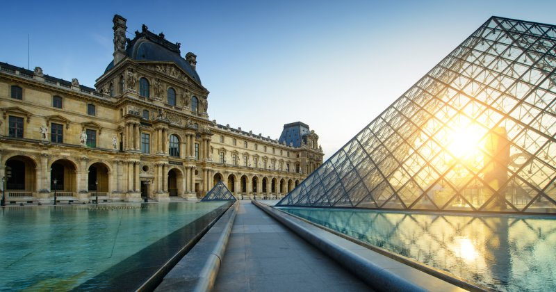
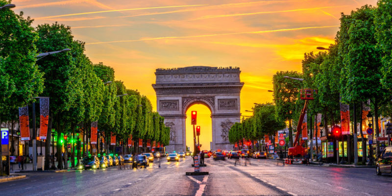

Francia
Francia, en Europa Occidental, abarca ciudades medievales, villas alpinas y
playas mediterráneas. París, su capital, es famosa por sus firmas de
alta costura, los museos de arte clásico, como el Louvre, y monumentos como la Torre Eiffel.
El país también es reconocido por sus vinos y su gastronomía sofisticada. Los dibujos de la antigua cueva de Lascaux,
el teatro romano de Lyon y el imponente Palacio de Versalles dan fe de su rica historia.
Francia es el segundo país con más población de la Unión Europea,
sólo superado por Alemania. 89. Marsella es la ciudad más antigua de Francia.
Fue fundada por los griegos el año 600 a.C. Además,
¡es la segunda ciudad más grande del país, después de París!
Mejores Lugares de Francia
París es, sin duda, el punto que más interés genera en todo el computo francés.
La capital francesa se ha convertido en un referente mundial en diferentes facetas
como gastronomía, historia y turismo.
El museo del Louvre, la inconfundible Torre Eiffel, Moulin Rouge, Notre Dame…
son puntos que generan un gran interés.
Algunas de estas cosas son las que hacen de París una ciudad única,
un lugar de ensueño donde perderte y vivir un cuento.
Francia dispone de unas infraestructuras del más alto nivel en Europa
175 recintos con un espacio total de 2,3 millones de metros cuadrados.
Por que escoger Francia
La facilidad de acceso, sus infraestructuras del más alto nivel, hermosos paisajes
y unos recintos únicos para acoger eventos son factores que refuerzan la posición de
Francia como líder en este sector.
París es también conocida por todos como la Ciudad de la Luz,
ya que la capital francesa fue la primera que dotó sus calles de luz eléctrica. Por otro lado suele ser denominada la Ciudad del Amor,
debido al encanto y romanticismo que desprende pasear por sus calles. Cada año, más de 14 millones de turistas deciden visitar París atraídos por sus magníficos monumentos, sus calles de época y sus grandes bulevares.
Además de ser una de las capitales gastronómicas más reputadas del mundo,
París seduce por su ambiente lleno de romanticismo y lujo.
Los franceses cultivan la pasión por el arte de vivir. Les encanta la cultura, ir a comer, ir de compras y visitar museos. Francia es un país de fiesta, de convivencia y de intercambio que hay que disfrutar.